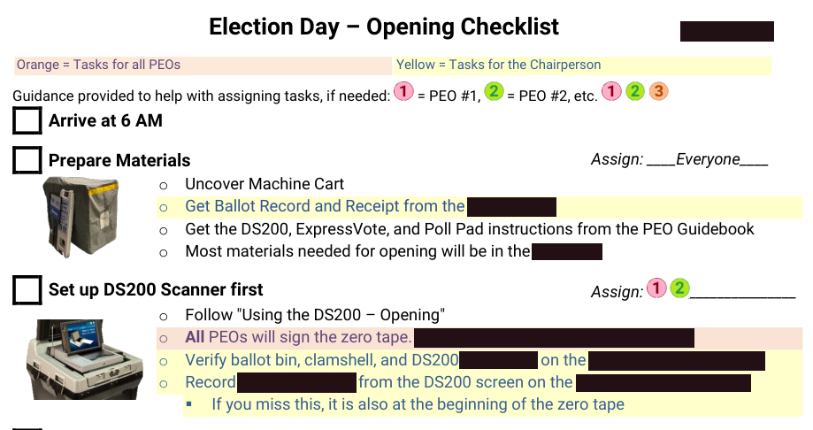
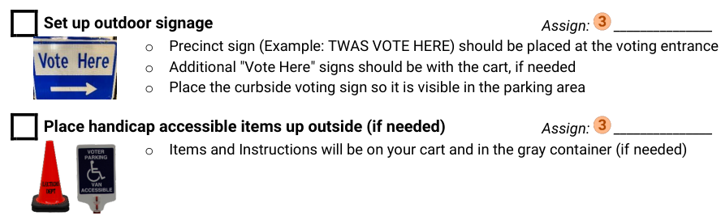
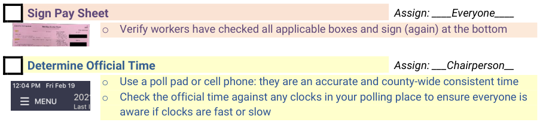
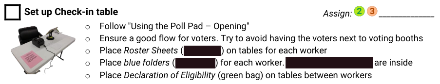
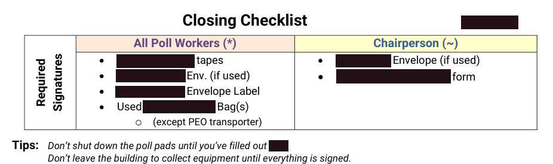
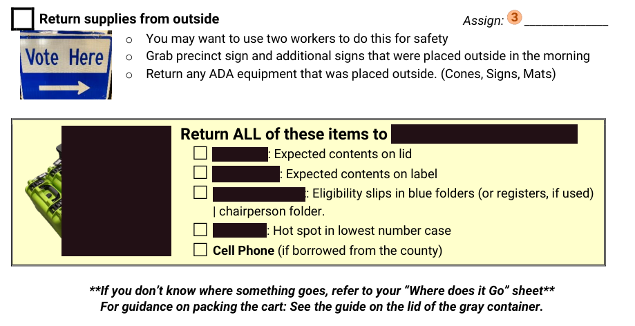

<<< Go Back
Documentation:
Chairperson Checklists
Situation
An election chairperson is in charge of a polling location on election day. We try to have experienced workers in these roles, but they still only receive 2-3 hours of training prior to each election they work. They might only work larger elecions. Also, election procedures change more often then you might think, so institutional knowledge isn't always best.
So how do we get people of varying experience, skillsets, and backgrounds to follow the same important legal procedures?
Task
The chairperson checklist was our answer. It was a paper guide to ensure everything was complete during hectic times, like opening at 6 AM to 7 AM, before voting could begin.
The checklist originated before my time at the county, but transformed in a big way during my tenure. The task was to thoroughly, and concisely, explain everything that needed to happen, and allow the chairperson to keep track of their team during the process.
Action
The chairperson checklist started out very simply. It was a word document that had bullet points of big items and sub-bullets for finer details. Just picture a black and white document that has something like this:
- Arrive at 6 AM
- Prepare materials
- Uncover machine cart
- etc...
I practiced the hectic parts of the process, opening and closing, using other workers in elections who weren't used to the process, to verify they could follow the instructions, where problems arose, and what could be misinterpreted.
So I made several changes over the course of several elections:
- Color coded tasks, so you could easily identify tasks that required all their workers, or them specifically (such as signatures)
- A worker assignment area, so they could form a plan before election morning.
- Worker assignment guidance, so they didn't end up assigning several time-consuming tasks to the same person.
- Pictures related to each task, so workers would have a visual aid and quickly find the task they're working on, if they are pulled away.
- Boxes instead of bullet points, so they can actually check off each item as they do it
- Consistent language and references to other documents, to prevent duplicating instructions and allowing them to hand off a separate document with more specific instructions.
Result
Overall, the process remained hectic, but eased the burden on a role that already has more than enough to worry about on election day. It allowed for people to operate more to their strengths: Those who liked to plan ahead could more effectively do so and those who needed assistance in managing workers got a push in the right direction.
Click on any of the images below to see examples. I won't show the complete document, simply because it might present a security issue for the election process, although I'm sure it's changed considerably since I left.
Opening:
   Closing:
 <<< Go Back